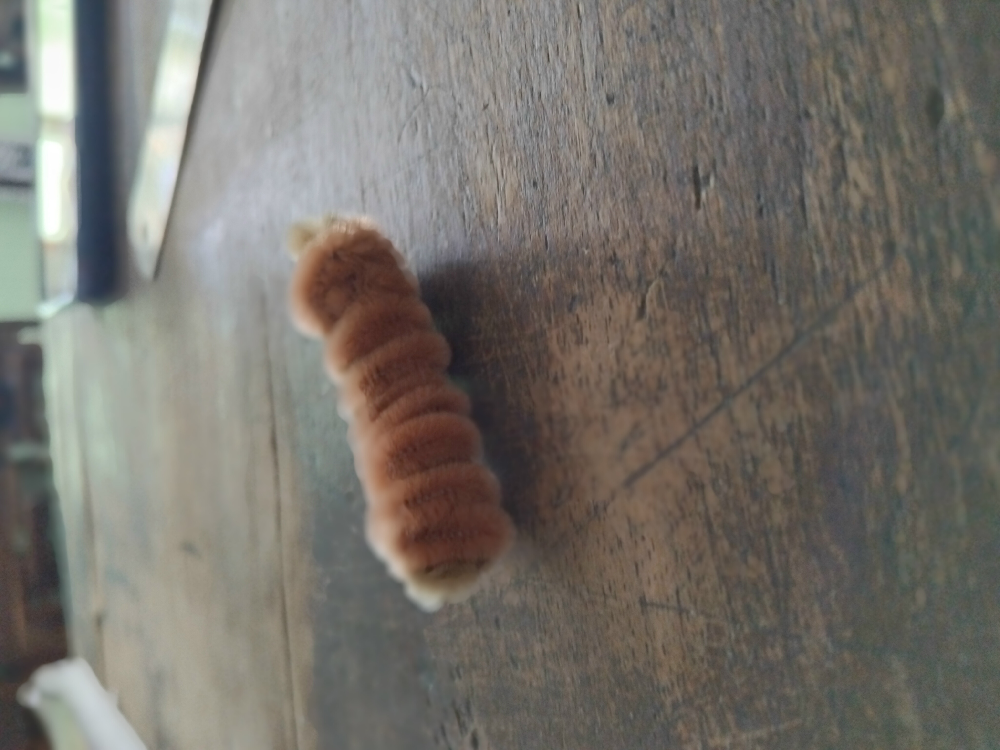

Simbol Manisnya Tradisi dan Kebersamaan
Jenang Kudus merupakan salah satu makanan tradisional khas Kudus yang tidak hanya dikenal karena rasanya yang manis, tetapi juga karena nilai filosofis yang terkandung di dalamnya. Rasa manis dari Jenang melambangkan harapan akan kehidupan yang bahagia, damai, dan penuh keberkahan. Dalam kehidupan sehari-hari, manusia diharapkan mampu menjalani hidup dengan penuh kesabaran, keikhlasan, serta sikap yang lembut dalam menghadapi berbagai tantangan.
Tekstur Jenang yang lembut mencerminkan sifat rendah hati, ketulusan, serta kelembutan hati dalam berinteraksi dengan sesama. Hal ini mengajarkan bahwa setiap individu harus mampu menjaga sikap, menghormati orang lain, dan menjunjung tinggi nilai-nilai kebersamaan. Selain itu, proses pembuatan Jenang yang membutuhkan waktu lama, tenaga, dan ketelitian juga mengandung makna bahwa segala sesuatu yang baik memerlukan usaha, kerja keras, dan kesabaran untuk mencapainya.
Jenang Kudus juga sering disajikan dalam berbagai acara adat dan keagamaan sebagai simbol doa dan harapan. Kehadirannya dalam setiap acara melambangkan keinginan agar kehidupan yang dijalani senantiasa diberikan kelancaran, kebahagiaan, serta keberkahan. Proses pembuatannya yang sering dilakukan secara bersama-sama juga mencerminkan nilai gotong royong yang menjadi ciri khas masyarakat Indonesia.
Sebagai warisan budaya, Jenang Kudus memiliki peran penting dalam menjaga identitas daerah. Oleh karena itu, keberadaan Jenang harus terus dilestarikan agar tidak hilang oleh perkembangan zaman. Generasi muda diharapkan dapat mengenal, menghargai, dan menjaga tradisi ini sebagai bagian dari kekayaan budaya bangsa. Dengan demikian, Jenang tidak hanya menjadi makanan tradisional, tetapi juga simbol kehidupan, kebersamaan, dan rasa syukur.

Email: kcharms039@gmail.com